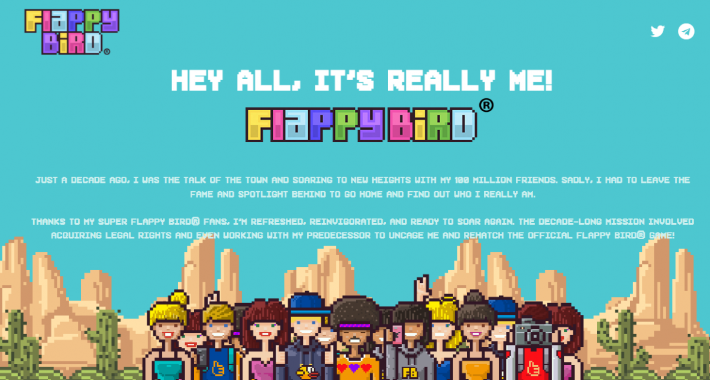
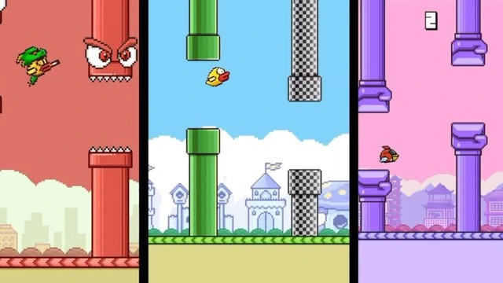

Gần đây, làng game di động đã có một tin tức bất ngờ khi Flappy Bird, tựa game từng làm mưa làm gió cách đây hơn một thập kỷ trước, sẽ chính thức hồi sinh. Thông tin này được công bố bởi Flappy Bird Foundation, một nhóm tự xưng là "đội ngũ đam mê chia sẻ trò chơi với thế giới".

Không khó để thấy một số người bắt đầu đặt câu hỏi về ai đứng sau dự án này, và mục đích thực sự của họ là gì. Phiên bản mới này của Flappy Bird không đến từ nhà phát triển gốc là Nguyễn Hà Đông. Thay vào đó, Flappy Bird Foundation hiện tại đã mua lại thương hiệu Flappy Bird và đang phát triển một trò chơi dựa trên phiên bản gốc. Vì vậy, mặc dù trò chơi này "chính thức" về mặt pháp lý, nhưng có lẽ cũng không hoàn toàn giống với những gì mà nhiều game thủ kỳ vọng.
Đến đây, mọi thứ có vẻ kỳ lạ nhưng chưa thực sự đáng lo ngại. Tuy nhiên, bằng chứng thu thập được từ website mới của Flappy Bird ( https://flappybird.org/ ) đã tiết lộ một hướng đi mới của trò chơi với sự tích hợp chặt chẽ với Web3 và tiền điện tử.
Trò chơi mời người dùng kết nối ví tiền điện tử và khuyến khích họ "khai thác điểm", dù chưa rõ điểm sẽ có mục đích gì. API của trò chơi thậm chí còn hiển thị bảng xếp hạng với tên của các nhà đầu tư tiền điện tử.

Một số người đã phát hiện ra mối liên hệ giữa nhóm phát triển dự án và các dự án Web3/tiền điện tử trước đây. Thực tế, thông báo trên Telegram về Flappy Bird được chia sẻ bởi "Digital AssetNews", một kênh có một số liên kết tới tiền điện tử.
Theo VGC, Nguyễn Hà Đông, cha đẻ của Flappy Bird, đã chính thức lên tiếng phủ nhận mọi liên quan đến phiên bản tái xuất dự kiến ra mắt vào năm 2025, đặc biệt là việc phiên bản này có liên kết với tiền điện tử.
Trên mạng xã hội X, ông Nguyễn Hà Đông khẳng định: "Tôi không có bất kỳ mối liên hệ nào với trò chơi của họ. Tôi không bán bất cứ thứ gì và cũng không ủng hộ tiền điện tử".
Tuyên bố của ông Nguyễn Hà Đông đã làm dấy lên nhiều tranh cãi về tương lai của Flappy Bird. Liệu phiên bản tái xuất này có còn giữ được sự đơn giản và tinh thần của trò chơi gốc, hay sẽ bị biến thành một công cụ phục vụ cho mục đích thương mại và tiền điện tử ?
- Bình Minh & Phong Đỗ -